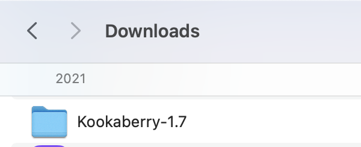
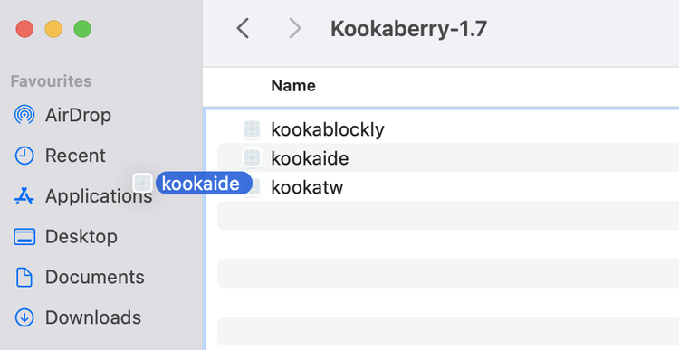
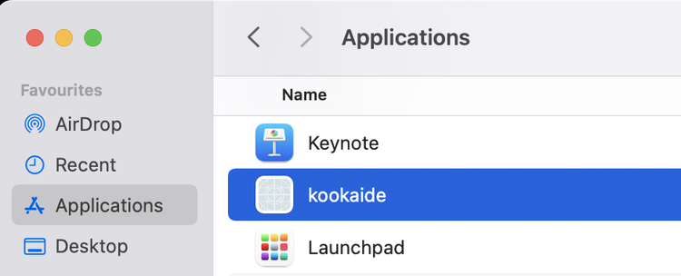
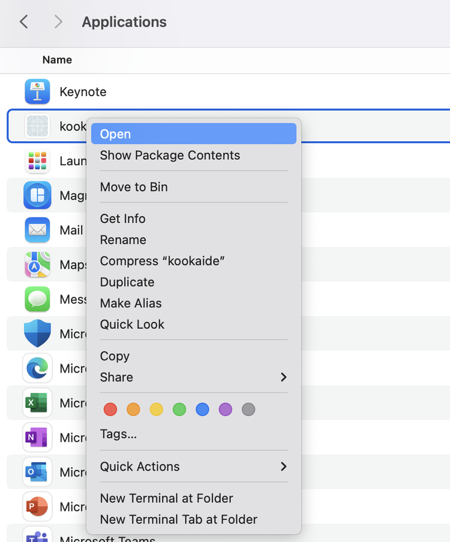
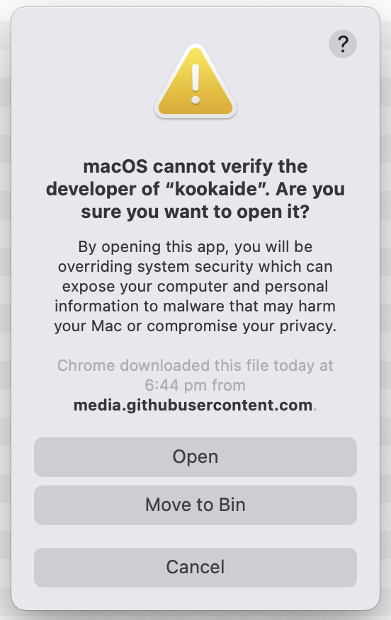
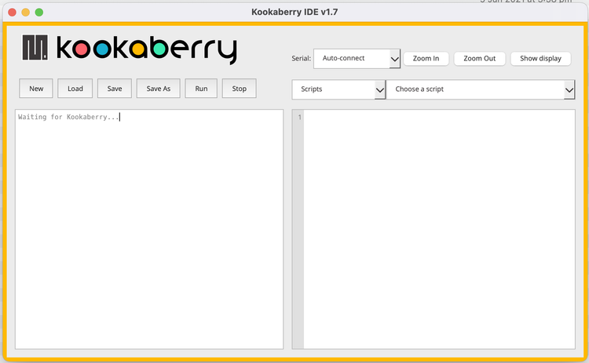

Mac (Apple) — How to Install KookaSuite
Step 2. Go to your Downloads folder, and find the zip file called
KookaSuite-1.7-macOS.zip. Click on the file to unzip it.

Step 3. A new folder called
Kookaberry-1.7 has been created by unzipping. Find it and click to go inside the folder.

Step 4. Find the file called
kookaide, drag it into the Applications folder in the left panel.

Step 5. Go into the Applications folder, and find
kookaide again.
Right click on the file and select
"Open" from the menu. This is how you need to open software that is not known by the Apple App Store, the first time. The Kookaberry software is safe — only use this option with software that is safe!

Step 6. Click the
Open button.

You did it!
The Kookaberry software will now open! Next time, you can just click on the icon in the Applications folder to open the app.
